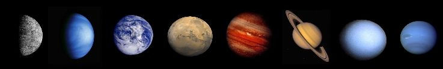

The word planet was originally derived from the Greek word for wanderer, as the planets appear to move against the background of the “fixed stars” in the night sky, over timescales of days to months as they orbit the Sun.
The Solar System contains eight planets and these are (in order from the Sun) Mercury, Venus, Earth, Mars, Jupiter, Saturn, Uranus and Neptune. The International Astronomical Union (IAU) has defined the planet to be:
- A body that orbits the Sun (and not another planet).
- To be large enough to become almost spherical – i.e. to collapse any structures that may be present due to its own gravity.
- To have swept out a path that contains no debris or other objects.
Thus, Pluto is no longer a planet as it fails the last of these criteria. It is now officially a “dwarf planet”.
The orbits of the planets obey Kepler’s laws of planetary motion, and are elliptical in shape.
The orbital periods of the planets range from 88 days (Mercury) to 164.8 years (for Neptune).
Jupiter is the largest of the planets, and has a mass which is 318 times that of the Earth. Mercury is now the smallest planet, and is just 5.5% of the Earth’s mass of 5.97 × 1024 kg.
|

The planets of the Solar System: Mercury, Venus, Earth, Mars, Jupiter, Saturn, Uranus, Neptune (not to scale).
Credit: Courtesy NASA/JPL-Caltech. |
Extrasolar planets orbit stars beyond our own Solar System. There are over 700 extrasolar planets now known.